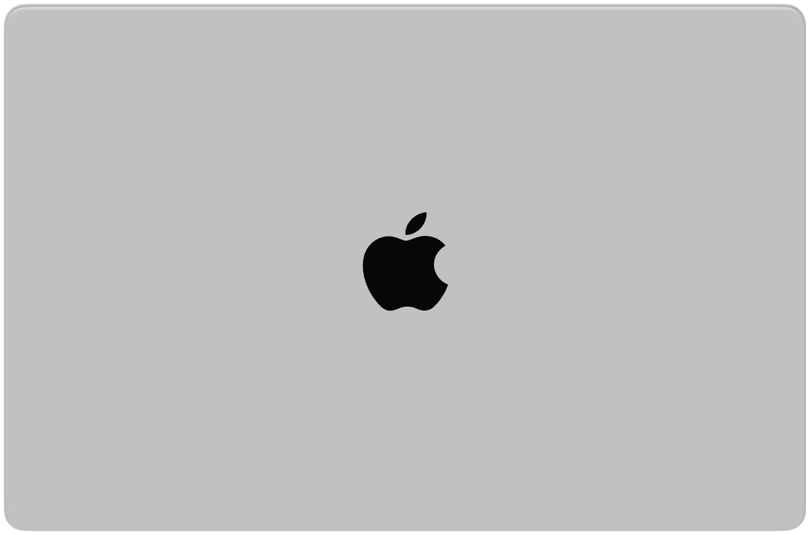
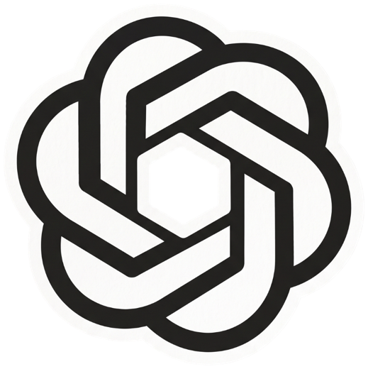
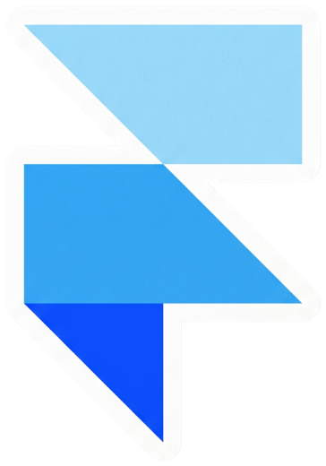
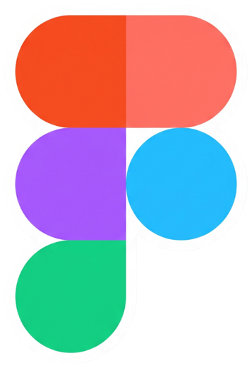
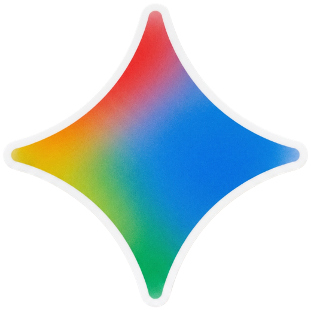
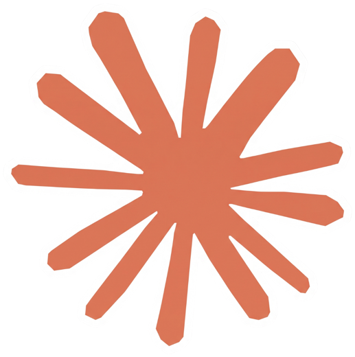
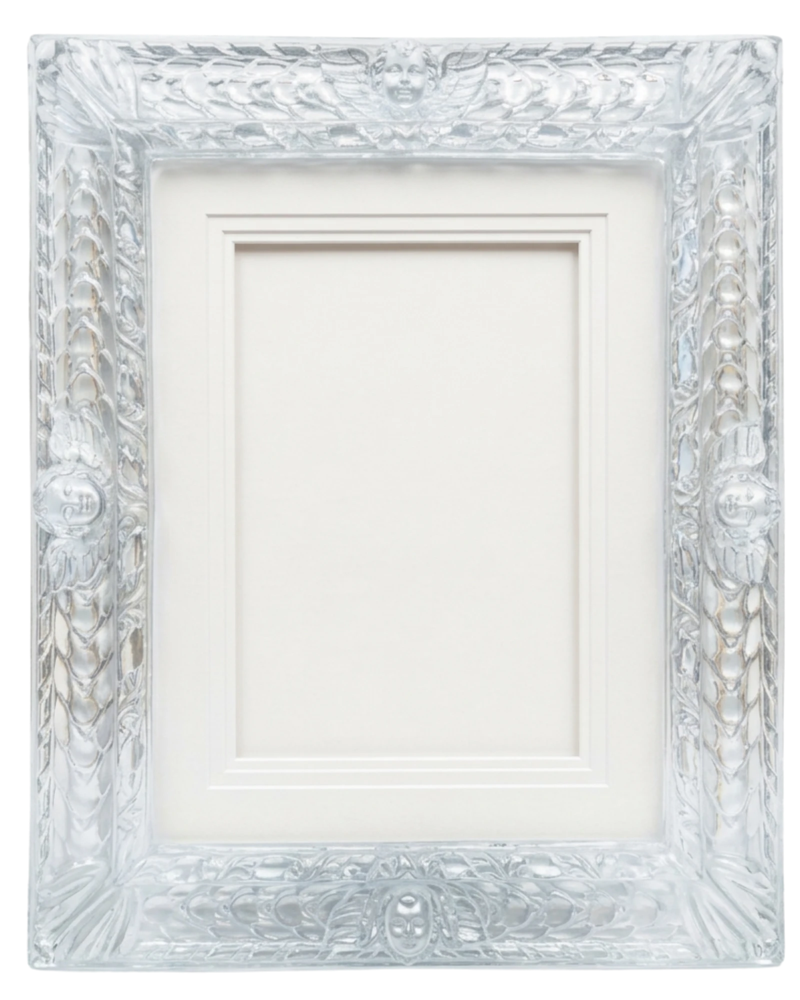

- DesignerBigBlockTheory2024 – Now
- Product DesignerForeignAdmits2022 – 2024
Namaskara ,
I am Avish Shetty
I design product interfaces, then get impatient waiting for someone else to build them, so I push it with AI.
I'd rather give you an unambiguous opinion and be wrong than a safe one that's useless.
Products I use to Design & Ship






My work
My Work

-
LoanMonk - Simplifying Education Loans
A mobile application that simplifies the process of finding and applying for education loans for students planning to study abroad.
-
Coding Judge - Learn Coding & AI the Right Way
An edtech platform designed for college students to learn coding and AI through a structured, hands-on experience. Led the end-to-end product design — from information architecture to high-fidelity UI.
-
SmartCue - Interactive Product Demos
A landing page for SmartCue, an interactive demo platform that helps businesses create personalized, no-code product demos to engage visitors, qualify leads, and accelerate sales cycles.
-
Fluff - Everything Your Pet Needs
A pet shopping app designed to help pet parents easily find and buy food, accessories, and care essentials for their furry friends.
Projects
Kind words
From people I have worked with.
“Avish is a rockstar when it comes to design thinking and quick execution. Great collaborator who tries to understand the intent of the work before putting the pen to it.”
“Avish has a rare ability to balance aesthetics with usability. Our landing page didn't just look great — it felt effortless to navigate. He nailed the visual hierarchy, made the CTAs impossible to miss, and gave the whole page a cohesive feel that matched our brand perfectly. You can tell he thinks like a user, not just a designer.”
“Working with Avish has been a pleasure. He has a strong instinct for user experience and delivers designs that are clean, practical, and built for the product. He takes feedback seriously and iterates fast, always coming back with thoughtful improvements. His work has meaningfully shaped what we're building at ForeignAdmits, and I'd happily recommend him to any product team.”